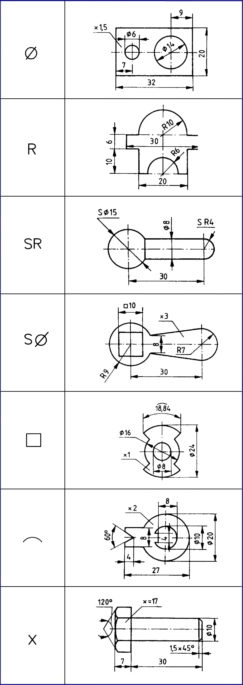

1. Alaki és formai ismeretek 1.5.3. A méretmegadás rajz - és betűjelei A méretmegadásnál alkalmazott méret mértékegységgel, számszerűen megadott érték, amely vonalakkal, jelekkel és megjegyzésekkel lehet kiegészítve. A méretszám minimum 2,5 mm, a jó olvashatóság érdekében használjunk 3,5 mm nagyságú méretszámot. A munkadarab alakjához kapcsolódó méretek jelölése (27. ábra): - átmérő, jele: 0 Hengeres anyagok és furatok méretének megadására használjuk. A méretmegadást végezhetjük vetületen belül, illetve kívül. Vetületen belül megadott átmérőnél a méretvonal ne essen egybe a tengelyvonallal. - sugár, jele: R Lemeztárgyak fémkörzővel kirajzolt és elkészített köríveinek, valamint lépcsős tengelyek átmeneti íveinek méretmegadásához használjuk leginkább. A sugár méretmegadásához félméretvonalat használunk, amelynek iránya a középpontból indul, és a rádiuszos felületre mutat. Ne alkalmazzuk az átmérőként mérhető és megadható felületek méretének megadásához. - gömbsugár, jele: SR - gömbátmérő, jele: S0 Forgástesteken jelentkező gömbfelületek, illetve gömbfelületű lekerekítések méretének megadásához használjuk. A rajzi méret megadás elvégezhető félméretvonallal, amely értelemszerűen a gömbfelület középpontjához mutat. - négyzet, jele: □ Négyzetes anyagok szelvényének, valamint négyzetes megilletve kimunkálások méretének megadásához használjuk. A négyzet geometriai jellegének megfelelően a jel után írt méret két dimenzió kiterjedését is jelenti. - ív, jele: Megadott sugarú vagy átmérőjű rádiuszos megmunkálások ívhosszának megadásához használjuk. A méretmegadáshoz használt méretsegédvonalakat az íves felület középpontjából sugárirányban, a méretvonalat rádiuszosan kell megrajzolni. - nézetre merőleges méret, jele: x Egy vetületével megrajzolható lemeztárgyak vastagsági méreteinek megadásához használjuk leggyakrabban. Értelemszerű használata sokszor vetületek elhagyását teszi lehetővé. A hatlapú alkatrészek jellegzetes ábráján a csúcstávolság látszik, e vetületen a laptávolság kivételével minden méret megadható. A laptávot mutató vonalon az xjelhez kapcsolva adjuk meg. 27. ábra 9
